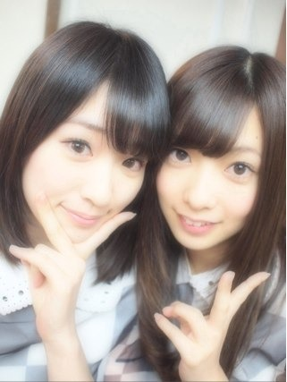
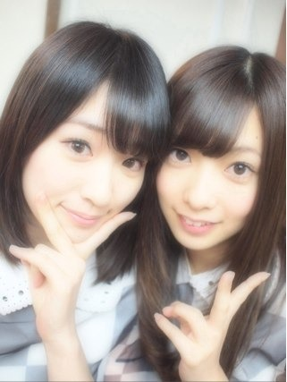

2012/0626Tue（´-`）.｡oO(かずみん×74
こんばんは！
いつも応援ありがとうございます(^^)
昨日は乃木どこの放送でしたね！
見ていただけたでしょうか？
無駄な笑顔が多いと言われてしまい
ました(>_<)笑
確かにこの間、まっつんにじーっと
見られてると思ったら
『かずみさんってホンマにずっと
笑ってるんやな〜』と言われました^^;
確かに歩いてる時も楽屋で座ってる時も
笑ってることが
多いかもしれないです...
友達にもよく『何笑ってるの？』と
言われてました。
変な人ですかね(；´Д`
楽しい時、面白い時、嬉しい時に
笑ったっていいじゃないですか〜！
それが常にある人生って
幸せじゃないですか〜！
無駄な笑顔なんてひとつもない！
だから私はこれからも
笑い続けます( ´ ▽ ` )ハハハ
握手会でみなさんとお話していると
笑顔に癒されます。
そして私も笑顔になる。
私もいつか
周りが自然と笑顔になるような
キラキラした人になりたいな。
-----
今日はゆび祭りに
参加させていただきました！
武道館のステージは想像以上に
大きかったです。
山口百恵さんがあのステージで
ファイナルコンサートを行ったのかと
思うと、立っていて感動しました。
私は本当にライブが大好きだから。
今日、本当に楽しかったです！
buono!さんに『大ファンです！』
と伝えられてよかったです(T_T)
buono!さんの出番の時、
私が楽屋のモニターの前で
盛り上がってたら
AKB48さんの仲川遥香さんが
話しかけてくれました\(//∇//)\
ハロ紺トークで盛り上がりました！
とても優しくて可愛かったです♪
私はアイドルが好きで、
ずっとアイドルになりたくて
乃木坂46に入ったので、
今日は他のアイドルのみなさんと
共演できてとても勉強になりました！
指原さん、そして今日一緒に出演した
アイドルのみなさん、
そしてそして、
来てくださったみなさん、
本当にありがとうございました！！
今日来れなかったみなさん、
まだ私たちはライブをやる機会が
少ないけど、
いつか必ずすると思うので、
それまで楽しみに待っていて下さい。
その時は成長した私たちの姿を
見せたいです！
------
毎日気温差が激しくて
体調を崩しやすい時期ですが
みなさん気をつけて下さい。
それでは、明日も頑張りましょう^^
おやすみなさい...

いつも応援ありがとうございます(^^)
昨日は乃木どこの放送でしたね！
見ていただけたでしょうか？
無駄な笑顔が多いと言われてしまい
ました(>_<)笑
確かにこの間、まっつんにじーっと
見られてると思ったら
『かずみさんってホンマにずっと
笑ってるんやな〜』と言われました^^;
確かに歩いてる時も楽屋で座ってる時も
笑ってることが
多いかもしれないです...
友達にもよく『何笑ってるの？』と
言われてました。
変な人ですかね(；´Д`
楽しい時、面白い時、嬉しい時に
笑ったっていいじゃないですか〜！
それが常にある人生って
幸せじゃないですか〜！
無駄な笑顔なんてひとつもない！
だから私はこれからも
笑い続けます( ´ ▽ ` )ハハハ
握手会でみなさんとお話していると
笑顔に癒されます。
そして私も笑顔になる。
私もいつか
周りが自然と笑顔になるような
キラキラした人になりたいな。
-----
今日はゆび祭りに
参加させていただきました！
武道館のステージは想像以上に
大きかったです。
山口百恵さんがあのステージで
ファイナルコンサートを行ったのかと
思うと、立っていて感動しました。
私は本当にライブが大好きだから。
今日、本当に楽しかったです！
buono!さんに『大ファンです！』
と伝えられてよかったです(T_T)
buono!さんの出番の時、
私が楽屋のモニターの前で
盛り上がってたら
AKB48さんの仲川遥香さんが
話しかけてくれました\(//∇//)\
ハロ紺トークで盛り上がりました！
とても優しくて可愛かったです♪
私はアイドルが好きで、
ずっとアイドルになりたくて
乃木坂46に入ったので、
今日は他のアイドルのみなさんと
共演できてとても勉強になりました！
指原さん、そして今日一緒に出演した
アイドルのみなさん、
そしてそして、
来てくださったみなさん、
本当にありがとうございました！！
今日来れなかったみなさん、
まだ私たちはライブをやる機会が
少ないけど、
いつか必ずすると思うので、
それまで楽しみに待っていて下さい。
その時は成長した私たちの姿を
見せたいです！
------
毎日気温差が激しくて
体調を崩しやすい時期ですが
みなさん気をつけて下さい。
それでは、明日も頑張りましょう^^
おやすみなさい...

2012/06/26 02:00


コメント(509)
乃木どこ見たよ♪
かずみんに無駄な笑顔なんかないよ(^^)
あと服かってもらえて良かったね(笑)
ゆびまつりおつかれさま(^^)
これからも日々成長だね!
がんばれー
そして、ゆび祭りお疲れ様でした！！
アイドルとして、いい１日になってよかったですね！！！
ゆび祭りお疲れ～
行きたかったなぁ…あぁ…
俺はかずみんの笑顔だいすきだから！！
かずみんの笑顔ずっと見てたい！！！
またいつか武道館立とうな！！
わたる
かずみん！
かずみん！みん！(笑)
かずみんはずっと笑ってるんですね。
プラズマですね。
でわっ！
無駄な笑顔はないでしょ！！！！
僕はいつもヘラヘラしてるからな…
まぁいいでしょ！！！！
てか、ゆび祭り見に行きたかったよ！！！！
かずみん こんばんは( ´ ▽ ` )ﾉ
乃木どこ見たよぉ♪
かずみん の笑顔は素敵やから
無駄でもなんでも かずみん が
ただ笑ってくれるだけでこっちは幸せやで！
やからこれからも かずみん の素敵な笑顔沢山見せてね♪
指祭りお疲れ様ぁ！
大好きなアイドルのみなさんと幸せな時間過ごせたんやね
いい刺激にもなったやろね♪
いつか乃木坂だけであのステージに立つような日を
楽しみに待っとくけんね\(//∇//)\
明日も勉強ガンバってきまぁす
かずみん もお仕事ガンバってね！
指祭りはいったよ！
乃木坂初武道館感動した！
他のアイドルのパフォーマンスが凄かったね
いいところを吸収して乃木坂のパフォーマンスにつなげて欲しい！
正直乃木坂は他のアイドルと比べて劣ってたかなorz
負けない位に頑張って乃木坂のパフォーマンス凄い！って言われるようになれるといいね！
頑張れ一実！笑
ゆび祭り お疲れ様！
笑顔が一番いい顔だよ(^o^)
かずみんの笑顔素敵だよ
乃木坂もいつか武道館でライブだ！！！
指祭りお疲れ様(⌒▽⌒)
武道館に立ててほんと良かったねー(^-^)/
あーうちも見たかったな…
乃木どこみたよ！
そう、無駄な笑顔なんてないのさ！
笑顔さいこー＼(^o^)／
Keep your smileじゃ(⌒▽⌒)
じゃまた明日もいっぱーい笑おうね♪( ´▽｀)
俺の周りのかずみん推しもすごくよかったって言ってたよ！
かずみんの笑顔めっちゃいいと思う！
でも、かずみんって控えめなんだなーと思う。
もっともっと前に出て欲しいな！
来週もかずみんの出番多そうで楽しみ！
ところで、今日のイベントはいい経験になったみたいだね。
仕事で残念ながら行けなかったんだけど、
今日の経験を通して成長したみんなのステージを見るのを楽しみにしてるね！
相変わらずの偉そうな感じでごめん（汗
それじゃ明日も笑顔でがんばろう！
僕はその無駄な笑顔に癒されてるんで、決して無駄ではないです。
無駄なことなんてなにもないのです！ありのまま、自然体でいてください！そのままのかずみん！が好きだ！笑
決して無駄な笑いではないよ！！！僕にはすごい大きな意味のある笑顔！！
笑ってれば戦争はできないんだから（笑）
これからも素敵な笑顔を見せてな☆
パフォーマンスお疲れ様でした！！
かず民(・∀・＞)ウッヒー
はるごんｗｗｗｗｗｗｗ
個人的にはみやび はるごん昔の推しの2人(´・∀・｀)
見に逝きたかったぜぜぜゼイ
乃木坂どこー緑の服似合ってましたよ
バイバイ
お疲れ様!!ゆび祭り行ってたよ!!
Buono!と絡めたのカナ？
よかったね
愛理との2S撮ってほしかったよ(><)
ゆび祭りお疲れ様でした～
楽しかったようで良かった～
噂じゃ最後にみんなでヘビロテやったとか
ちゃんと踊れた？ｗ
今度は乃木坂が単独で武道館できたらいいね
んで、乃木どこ
かずみんの笑顔は無駄じゃないよ～
占いなんて気にしないｗ
常に笑顔の方が凄いと思うけどねぇ
そこは変わらずいきましょ～
かずみんに大賛成！
無駄な笑顔なんて無いし、かずみんの笑顔に元気を貰っている俺達ファンの為にも、かずみんにはこれからも笑顔でいて欲しい♪
そんなかずみんの笑顔がもっと輝けるように応援してます！
にしても、変な子ってシーンによってはおもわれますな～も(〃⌒ー⌒〃)∫゛(;￢_￢)ジ
ちっくと意識すれば直るかもしれないだがや～～。まあ、どちらでもいいでしょうけどね
ヾ(´ω｀＝´ω｀)ノ(・∀・)イイ。アイドルの内は。
そーかそーいうのあったんですな。AKBの人も何人かお忍びで来てたらしいっすよ
(^_^;))))))コソコソ…(~▽~＠)♪♪♪。にしても多かったんですな～～楽屋もなんか
凄まじい人数なのが想像できますだなや～～
ほんと元気もらえます♪
昨日の乃木どこみたよ♪♪
無駄な笑顔なんてない！！！
かずみんの笑顔でこれからも
回りの人を笑顔にしてね(^^)v
もちろん、握手会での笑顔楽しみにしてます(*^^*)
できるだけ面白い話題考えていくからよろしく！！笑
ライブおつかれー(^^)/
乃木坂のライブ早くみたいな♪♪
今度は七夕の全握かな(^^)
んじゃ
BYE-BYE(^-^)/
またいつか、みんなで武道館に行きたいね！
乃木坂ならまた連れていってくれると信じてるぜい！
NAMERO
笑うことはいいことだ！
それがかずみさんらしくていいんだよ
指祭り行きたかったわ～
楽しそうでうらやま～～～～
乃木坂46だけで武道館でるときは絶対行くけん
さかちょん
しょせんは占い。当たるも八卦当たらぬも八卦。結構アテにならんもんでっせ。それよりも笑う角には福来たるって昔から言うでしょう。おっしゃる通りで笑顔に無駄はない、そう思いますよ。
武道館、貴重な経験がよかったですね。残念ながら今日は参加できなかったですが、単独での武道館公演待ってまっせ。
今日はお疲れ様でした。ゆっくり休んでください、ではでは
あと、乃木どこ見たよーー！！確かにかずみんはずっと笑ってるイメージ！笑。笑顔が似合うってことだよー羨ましいo(^▽^o
ちわっ
かずみん♡
かずみんの笑顔サイコーだよ!
しあわせが逃げてくなんてｗ
その逃げてった幸せはファンに届いてるぞー(*^^)v
これからもかずみんの笑顔で俺らを元気にしてね♪
でわ夜更かしは美容に悪いぞー(^^)/
おやすみかずみん(゜-゜)
俺も良く笑ってるから
二コちゃんとかあだ名昔付けられたわｗｗ
真顔とかできんけん
大変やったわ
乃木どこちゃんと見たよー♪
日村さんとのあっちむいてほいおもしろかった！！
斜め上に向くのは反則だよ(笑)
次の握手会ではかずみんとあっちむいてほいやろっかなぁww
普段はあんなに高い服買わないんじゃないの！？
日村さんに感謝だね(笑)
魚ちゃんの占いは厳しいね(笑)
かずみんの笑顔は癒されるから今のままでイイと思う♪
来週はかずみんミートソーススパゲティ作ってたね♪
来週の乃木どこが楽しみやわ♪
じゃぁかずみんおやすみzzz
charlieです。今日は早めのコメントでしょ？ｗ
乃木どこ観ましたー。かずみさん出番多くてテンション高山でした！
今回のかずみさんのブログ本当にめちゃくちゃ同意です。良い事言うな～。
かずみさんの言うとおり無駄な笑顔なんて無いですよ(^^)
笑うことはすべてポジティブな結果を生むと思ってます。
真面目な話、身体にも精神にも笑うことは凄く良いことだと思うんです！
とりあえず笑っておけばなんとかなる！と思いますｗ
オレもかずみさんの笑顔にホント元気貰ってます。
その笑顔がホント大好きなので・・・ｗこれからも素敵な笑顔で周りに元気をあげていって欲しいです。
乃木どこでは、真面目な顔も凄く素敵で、そこからの笑顔の変化にこっちも自然と笑顔になってしまいましたー(^^)
あ、あと、来週の料理の会もめっちゃ楽しみにしてますね（・∀・）ﾆﾔﾆﾔ
------------------------------------------------
ゆび祭りお疲れ様でした！
行きましたよー！凄く楽しかった！
かずみさんも楽しめたようで良かった！
この更新の速さからしても凄く楽しかったんだなーってｗ
どのアイドルも代表曲披露してて凄く豪華でしたねー！
Buono!の三人はやっぱキャリアが長いだけ合って凄いパフォーマンス魅せてくれました、さすがです。
乃木坂のパフォーマンスも凄く良かったです！久々に観たらまたひとつ成長してたような、そんな気がしました。ライブの機会、本当に増えたらいいなって思います。
ファンのみんなも凄く期待していると思うので、その日を待ってますね！
そして、いつか乃木坂がワンマンで武道館に立てる日が来ると良いよね！
そんな日を楽しみにしています！
あ、最後のヘビロテ、かずみさん踊ってるの観てましたー！凄い良かったですよ！！！
この奇跡のコラボも生で体験できて本当によかった！
--------------------------------------------------
毎日お仕事お疲れ様！
かずみさんも体調には気をつけて頑張ってね。
それでは、おやすみなさい！失礼しまーす。
(^o^)v
かずみんは笑顔が一番素敵だよ！
(つ´∀｀)つ
笑顔の人を見ると、こっちまで楽しい気分になるように笑顔には人を幸せにするパワーがあります。
かずみん！これからもどんどん笑顔で行こうぜ
(*^▽^)/★*☆♪
ゆび祭りお疲れ様でした。
今日共演した他のグループの良かった部分、肌で感じた部分を吸収して乃木坂に生かしていって下さい。
かずみんの憧れの日本武道館のステージはどうでしたか？
乃木坂単独で日本武道館でライブを出来る日が来る事を期待してるよ！
何だか見てるこっちまで楽しくなってくるよ＼(^o^)／
だから、一実には常に笑顔でいてほしい
悲しませたくないのだ～！
どのアイドルのパフォーマンスにも圧倒されました!
今日の指祭りでも笑顔の絶えないかずみん、素敵でしたよw
確かにかずみんいっつも笑ってる！
乃木どこのアップの真剣な顔からの
笑顔よかったぜ
最近気づいたけど、かずみん映るとき
何故かいろいろ編集で効果音付いてるよねw
あれずるいわw面白い！
そういえば日村さんに買ってもらった
ワンピースいくらだったのか気になる
高そうだったからかずみん着なれないかもねw
ほかにもいろいろツッコミたいこととか
話したいことあるけど
やっぱ個別で話すね～
そうです！今日申込みました！
楽しみ～
じゃあね～
笑顔に無駄な笑顔なんてないと思いますよ。
笑顔は見ている人を幸せな気持ちにするので、これからも今のままでいてくださいね。
そう言う私も、高山さんの笑顔に癒やされてます。(笑)
確かに笑ってるなー。
握手の時、握手券お預かります。
とかスタッフさんの声が聞こえた時のかずみさん2828してるからなｗｗ
目があっても2828しとるからなｗｗ
かずみさん。かずみさん。かずみさん←
笑えるってそれだけ毎日充実しとんやろな(´･ω･`)
辛いことや悲しいこと苦しくて涙するときもあるけど、人間ってちょっとの幸せやちょっとの楽しいことほんと些細な出来事があるから、そういうの乗り越えれるんかなって最近思う (´･з･`)
そういうのって人間の特権やと思う(ﾟ∀ﾟ)
99％辛いことあっても残りの1％が幸せなら乗り越えれるんだと思う。
一実が努力したことが実になりその実に水をやるのがさおりの仕事。
水を貰った実は太陽の光を待って先頃を待つ蕾。
いつか、その蕾に綺麗な花を咲かしてね(´･ω･`)
百恵ちゃんみたいに
素敵なアイドルになる日を
楽しみにしてる(´ｰ｀)
今日、学んだことを次に生かせるように。
指祭り行きたかった(T_T)
来週末はいちみちゃんに会える(ﾟ∀ﾟ)
かずみんへ
かずみんが笑ってるとことか見ると
釣られて笑っちゃいます(笑)
明日ﾃｽﾄでﾋﾟﾘﾋﾟﾘしてたんだけど、
乃木どこのかずみん見て肩の力が
抜けた感じです(^O^)
乃木坂46の皆が本当に大好きです！
これからも応援してます！！
行きたかったなー。
とりあえず来月の全国握手会には行けるので
そこでライブ見れるから楽しみです。
まだ曲が少ないから仕方ないかもしれないけど
早く本格的なライブが見たいな。
そのうちあると思うので、今はそれを楽しみに待ってるよ！
そう聞かれた際に、相手の納得がいく答えが返せるという事であれば、笑ってたって問題ないと思いますよ。
and
乃木どこの予告を見て思った事。
かずみさん、料理作ってましたね。（多分、ミートソースではないかと思われ。）
番組でとりあげる以上、料理自体の出来不出来は無論の事、料理を作る過程も大事になってこようとは思うのね。
で、料理って、何気にその人の性格が表れたりするもの。と自分では思ってる訳でして。
かずみさん、フライパンの上にヘラを乗せたまま別の作業をしてましたけど、あれがどうにも自分には気になってしまいまして。
やりっぱなしは”美しくないな”なんて思いました。
別の事をする際は、料理器具は、トレイの上においておくなりの事はしませんと、"だらしのない子だな"なんて思われかねませんよ。
などと自分では思ったりしたんだけれども...
俺は平和主義者だから笑顔が大好きです(●^ー^●)
いつまでも今のままでねっ(^^)v
乃木どこ見ましたよ。無駄な笑顔と言われていたけど握手会でかずみんが笑顔で握手してくれたおかげで心が癒やされて、就活も頑張れたと思ってます。そして勉強も頑張れています。
かずみんの笑顔はとても素敵だと思います。だから笑顔でいられる時は笑顔でいて下さいね&ezF7EE;
ゆび祭りお疲れ様でした&ezF3AD;
明日もお仕事頑張ってね☆
またコメントします！
ゆび祭で他のグループとの交流ができてよかったねo(^-^)o
いろんな人のブログ見てると写メ一緒に撮ったりアドレス交換とかもしたみたいで
グループを越えた交流があってもいいよね!!
こんばんは=^・^=
やっぱ、かずみん
大好きや～(*^^*)
無駄な笑顔ってないと思う(^O^)
笑顔は人を優しくできるし幸せにもできるからね。
ーーーーチョキチョキーーーー
ゆび祭りは良い経験ができたみたいですね♪
良かった。
私も早く乃木坂のライブが見たいです。o(^-^)o
ーーーーチョキチョキーーーー
最後まで、かずみんの気遣いが感じられるブログだと思いました。
かずみんも
疲れてるからだをいたわって、体調崩さないようにして下さい(*^^*)
おやすみ♪
またね(*・ｘ・)ノ~~~♪
何を今更w
な～んてね（笑）
笑う門には福来る
というじゃないですか。
笑顔は幸せを引き寄せるんですよー
たぶん年内にもう一枚くらいCDリリースがあって、
クリスマスの頃に初ライブ、年初からツアーって
感じになるのかな。
ライブも期待してますね～
今日はお疲れさまでした～
ほんとにご苦労さまです!!
ほんとに立派ですっ(´∀｀)ノ
今日はなんか
かずみさんがブログ更新しそうな気がして
勉強しながら起きてました(・∀・)ノ
ゆび祭りで
他のアイドルの方々から色々学べたみたいですね!!
今はまだライブなかなかできないかもだけど
これからいっぱいできるよっ!!
かずみさんの輝いてる姿
握手会以外でも観たいなぁ…
あと今日
3rdの握手会の申し込みしました!!
かずみさんにだけ申し込みしたよっ!
ほんとは他のメンバーも観たかったけど
心を鬼にしたよ…
かずみさんにしか握手しに行かないって
自分ルールですっヾ(=^▽^=)ノ
昨日、乃木どこ観たよ♪たしかにずっと笑顔だよね!!だからかずみん見てるとこっちも笑っちゃうよ♪
真剣な顔からの笑顔ちょーかわいかった♪
乃木坂のライブめっちゃ楽しみに待ってます。
まさかの偶然ななみんと遭遇(笑)あれは面白すぎました！(笑)
結婚はいつかな？(笑)
無駄な笑顔って言われてましたね！全然無駄じゃないと思うんだけどな。
みんな、かずみんの笑顔に癒されてますよ！
その笑顔で癒されている、おいさんがここにおるばい(^^)v
ゆび祭りおっつでした！あ～行きたかった(>_<)
いつか福岡でライブする日を楽しみにしとるばい！！！
コメントする